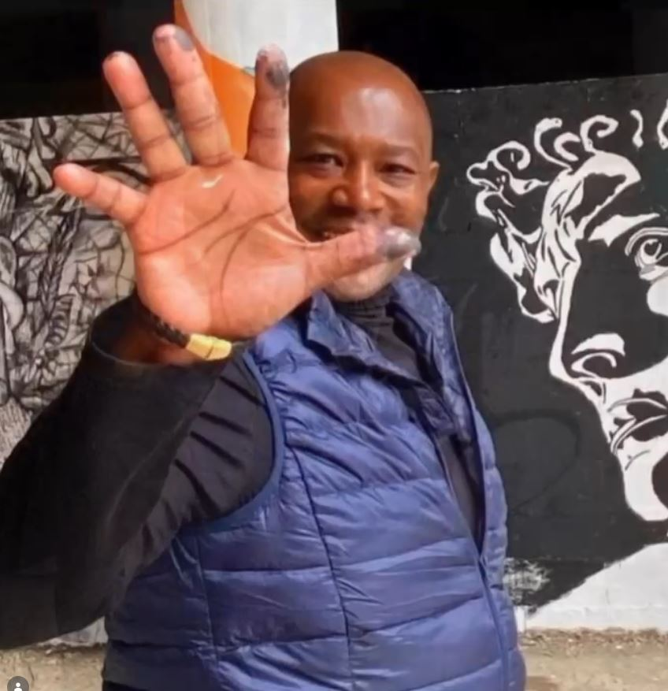

The Artist
A contemporary approach shaped by the exploration of form, color, and human intensity. twagirumukiza’s work seeks not to illustrate, but to bring forth a sensory experience.

Between abstraction and presence, twagirumukiza’s works create a space where matter becomes language. Each canvas seeks emotional density, breath, and a carefully held tension.
"My artistic approach"
I understand art as a threshold between intimacy and visibility. Painting becomes rhythm, memory, construction, and openness. It invites the viewer to see differently, to slow down, and to feel more deeply.
Techniques
-
Sculpture
Sculpture is at the core of my practice. It allows me to explore form, balance, and tension in space, giving physical presence to inner movements. Through volume and structure, I translate what cannot be seen.
-
Acrylic Painting
Acrylic painting offers immediacy and fluidity. It enables me to work with layers, contrasts, and rhythms, capturing spontaneous gestures while building depth and intensity on the surface.
-
Mixed Media
My use of mixed media reflects a desire to go beyond traditional boundaries. By combining materials and techniques, I create dialogues between textures, forms, and visual languages.
-
Material Exploration
Material is not just a support, but a language. I explore its resistance, fragility, and transformation, allowing it to carry memory and emotion within the work.
-
Series & Installations
Working in series and installations allows me to develop a narrative over time and space. Each piece becomes part of a larger journey, inviting the viewer to move, reflect, and experience the work as a whole.
Artistic presence
- 2022
Exhibition at Spaces La Défense
- 2021
Exhibition at Spaces La Défense
- 2007
Exhibition at Waterloo Gallery (Waterloo, Belgium)
- 2006
Exhibition at the Heatherley School of Fine Art (London, Chelsea)
- 2006
Exhibition at Waterloo Gallery (Waterloo, Belgium)
- 2005
Exhibition at Espace Daniel Sorano (Vincennes, France)
- 2004
Exhibition at Espace Simone Signoret (Évry, France)
- 2004
Exhibition at Espace Daniel Sorano (Vincennes, France)